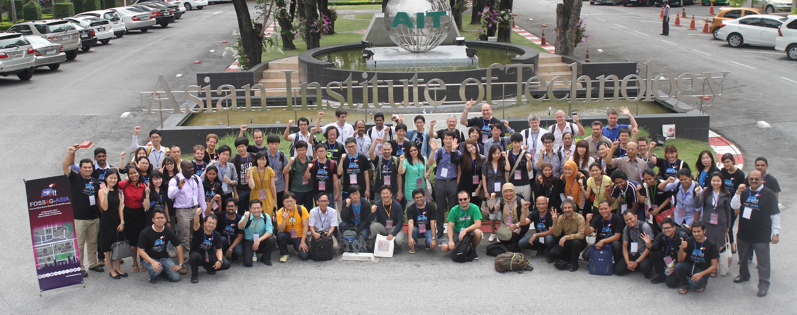

Free & Open Source Solutions for Geoinformatics - ASIA
Enabling Geospatial Asia through Open and Participatory ICT Ecosystem
Free & Open Solutions for Geoinformatics-Asia conference will be held in Bangkok, Thailand, 2-5 December 2014.
FOSS4G-Asia 2014 aims to bring together FOSS4G users and developers worldwide and foster closer interactions with and amongst Asian communities in order to share ideas for improving software and applications. The Bangkok conference will cover all aspects of FOSS4G, Open Data and Open Standards, with a particular focus on exchanging experiences between FOSS4G users and developers and providing first-hand information on FOSS4G for developing national/local spatial data infrastructures in Asian countries. FOSS4G-Asia 2014 also commemorates ten years since the FOSS-GRASS User Conference was held at Faculty of Engineering, Chulalongkorn University, Thailand between 12-14 September 2004.

FOSS4G-2014, Asian Institute of Technology, Thailand. 112 participants from 18 countries
Professor,
Politecnico di Milano
President & CEO,
Orkney, Inc.
President & CEO,
Gaia3D, Inc.
Team Manager ,
Humanitarian OSM Team

Associate Research Fellow,
Korea Research Institute for Human Settlements
Deputy Executive Director,
Thailand National Electronics and Computer Technology Center (NECTEC)
Director of Service Research and Innovation Program,
National Science and Technology Development Agency(NSTDA)
President OSGeo and CEO Gateway Geomatics,
Open Source Geospatial Foundation (OSGeo)